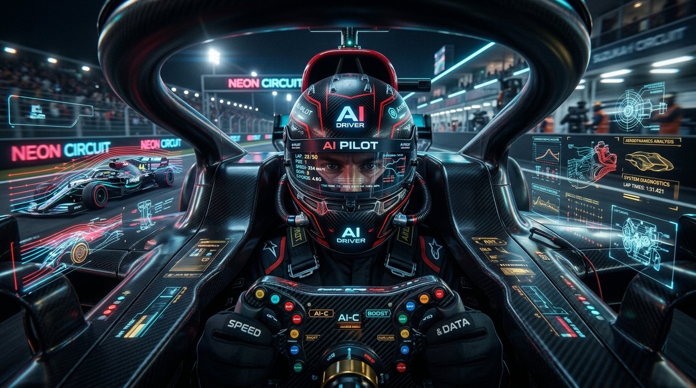

Why raw instincts and casual prompt tinkering fail in enterprise engineering—and how clinical precision, deep mechanical setup, and certified rigor define the modern Delivery Pilot.

A historical lesson on how systematic discipline and mechanical mastery conquer chaotic environments
In this iconic scene, Lauda diagnoses mechanical faults simply by listening to the engine and feeling the chassis vibrations—demonstrating why deep engineering insight outperforms superficial driving.
How the four hallmarks of Niki Lauda translate directly to enterprise AI agent execution
Where ordinary drivers treated the car like a wild horse to tame, Lauda treated it like a machine to engineer. He was famous for giving engineers brutally honest, granular feedback—telling Ferrari their car was "a piece of junk" during early test drives until they fixed its handling. He understood mechanics better than almost anyone on the grid, enabling him to set up a chassis to maximize efficiency over an entire race distance rather than just one heroic lap.
Most drivers in his era were romantic thrill-seekers who accepted the deadly risks of 1970s racing. Lauda was pure logic. He famously said he was paid to drive, not to take unnecessary risks. When conditions became life-threatening at the rainy Japanese Grand Prix in 1976—just months after surviving a fiery crash—he pulled into the pits and retired, stating his life was worth more than a title.
Lauda's comeback after his famous 1976 Nürburgring crash is considered one of the most unbelievable feats in sports history. Trapped in a burning car, he suffered severe third-degree burns to his head and inhaled deadly toxic fumes. Just six weeks later—with fresh skin grafts and bloody bandages under his helmet—he was back behind the wheel at Monza finishing 4th, overcoming intense pain and mental trauma through pure willpower.
Average drivers rely on a specific driving style, but Lauda adapted as the sport evolved. In the 1970s, he dominated through raw speed and technical setup. Returning in the 1980s with McLaren, he realized his younger teammate Alain Prost had a slight edge in raw qualifying pace. Lauda adapted by focusing entirely on race setup, tire management, and strategy—ultimately beating Prost to win the 1984 World Championship by half a point.
How average drivers / prompt coders compare against Niki Lauda and Certified Delivery Pilots
| Dimension | Average Driver / Casual AI User | Niki Lauda (The F1 Benchmark) | Certified Delivery Pilot (The AI Benchmark) |
|---|---|---|---|
| Approach | Intuitive, emotion-driven, vibing with prompts | Analytical, systematic, businesslike, telemetry-first | Deterministic engineering, structured test harnesses, OKR-driven execution |
| System & Setup | Relies blindly on out-of-the-box defaults and vendor models | Dictates mechanical setup, chassis balance, and engineering direction | Architects custom MCP servers, vector retrieval pipelines, guardrails & CI/CD |
| Risk Threshold | Pushes unvetted code beyond safety limits into production | Calculates risk vs. reward with ruthless, rational coldness | Enforces Zero-Trust boundaries, audit ledgers, rollback triggers, and compliance |
| Handling Adversity | Panics when models hallucinate or breaking changes occur | Overcomes life-threatening trauma through sheer willpower & focus | Systematically isolates root causes, refactors state loops, and guarantees uptime |
| Adaptability | Tied to static syntax patterns and obsolete frameworks | Pivots from 1970s raw horsepower to 1980s strategy & tire management | Pivots fluidly across models, multi-agent swarms, and agentic workflows (BMAD) |
| Legacy & Value | Defined by temporary speed or a single flashy demo | Defined by 3 World Championships, intellect, resilience, and leadership | Delivers measurable enterprise ROI, autonomous reliability, and living codebases |
Explore our free assessments, simulation workshops, or deploy a certified Delivery Pilot today